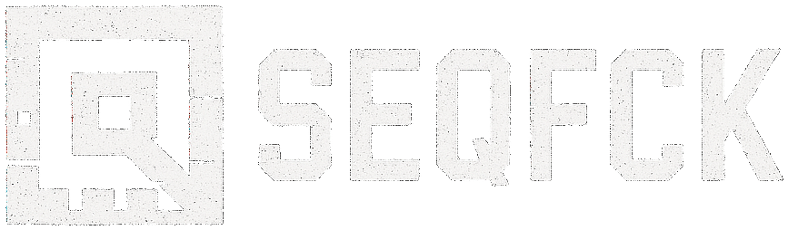

Playable by nature,
Play by hands,
Play your way,
Play anywhere...

What is SEQFCK?
SEQFCK is not only a modular groovebox for modern hybrid setups that runs both in the browser and as a standalone app. It is a flexible and powerful musical platform made of components that can be mixed and matched, built around a multitrack sequencer capable of controlling internal machines and external software and hardware. Configure your modules, build your setup, and play. Use the computer keyboard or add a midi controller, everything is made to be played by hands.
Why SEQFCK
- Because playability is everything
- Sequencer, Groovebox, Controller, Sampler and much more, always with your hands
In the box
Built-in sampler
The sampler is designed for fast, expressive sample-based composition. Load your own kits and shape them with filters, envelopes, and modulation. Perfectly integrated with the sequencer, it supports sample-per-step, parameter locking, and real-time performance via keyboard or MIDI controller.
Expandable virtual synth engines
From sharp FM tones to warm virtual analog vibes, SEQFCK comes with a collection of built-in synth machines, including FM, virtual analog, drum sound generators — each designed for performance, automation, and deep integration with the sequencer.
Expanded modulation without limits
Every parameter is modulable — sequence, automate, or tweak anything in real time, from sound shaping to MIDI control, with per-step precision, easily using the dedicated buttons.
Out of the box
Enjoy a truly playable experience
Every control in SEQFCK is mappable — whether you're using an external MIDI controller or just your computer keyboard, you can perform, tweak, and sequence without ever touching the mouse.
Control external MIDI gear, hardware or software
SEQFCK acts as the central brain of your setup, seamlessly controlling hardware and software devices via MIDI — from synths and drum machines to DAWs and plugins — with full support for notes, CCs, program changes, and custom mappings.
Total recall of your hybrid setup
Designed to handle complex projects with scenes, patterns, groups, and tracks, SEQFCK lets you build dynamic arrangements and modular song structures — with full recall of your hybrid setup, routings, and configurations.
A simple interface. Your rules.
- Choose your layout
- design your interface
- adapt to your setup
- forget menu diving
SEQFCK is built on a modular UI system where every component — from sequencers to buttons to knobs — can be added, moved, resized, and customized based on how you want to control them.
Despite its flexibility, everything lives within a single, clean interface designed for clarity and speed. No tab switching. No menu diving. Just pure, immediate control tailored to your workflow.
Customize everything from button layouts to color schemes, from track count to sequencer triggers and save any setup for instant recall.
Add and arrange UI components freely to find the perfect fit for every screen and controller
One screen, no tabs or menu Diving — Focus on the music, not the UI
Build views optimized for your MIDI controller, workflow, or performance needs
Every element can be linked to keyboard or MIDI controls for instant access
Save and load entire interface setups, from minimal live rigs to deep studio templates
Automatically adapts to different screen sizes, from smartphones to desktops
Play with your hands
SEQFCK is built with one core belief: music should be played, not just programmed. That’s why seamless integration with external controllers and instruments is at the heart of the experience.
Whether you’re using a compact pad controller or a complex multi-device rig, the interface is fully configurable to adapt to your setup — so you can focus on making music with your hands, not your mouse.
And if you don’t have a controller at hand, no problem — every function can be triggered from your computer keyboard, with customizable mappings that let you play your way.
Our modular sequencer
- Multitrack
- Multigroove
- Multilayout
- Multisync
- one sequencer to rule them all
At the heart of SEQFCK is a polyrhythmic and modular sequencer which can be used to control external instruments, software or the internal machines. Every element is mappable. Every parameter is playable.
You can decide how many tracks, how many groups, how many steps and pages, Our flexible approach allows to build your sequencer, your way.
Unlimited tracks grouped into customizable sections
Per-step control of notes, gates, velocity, and MIDI CCs
Multiple sequencing modes: poly, arpeggiator, chords, euclidean, ...
Polyrhythms and polymeters per track
Scene and pattern chaining, morphing, randomization
Fully mappable to keyboard and MIDI controllers
Customizable grid mode for any controller or keyboard
Instant recall and total setup flexibility
What you can do with SEQFCK
Here are some ways you can use SEQFCK
Mobile setup
You can use the SEQFCK app on the go directly from your smartphone or tablet. The user interface is optimzed for touch control and we provide layouts built for small screens. Collaborate in real time and share musical ideas with other musicians, keep your creativity flowing, wherever you are
- Access from any browser or via mobile app
- Share projects and collaborate with others teammates
- Layouts optimized for small mobile devices
- Don't miss any musical idea
Work in the box
Keep the joy of playing with your hands, even when producing entirely in the box. SEQFCK brings tactile expression back to digital music-making, letting you perform, tweak, and explore without losing the feel simply using the computer keyboard as main controller.
- Completely playable using the keyboard of your computer
- Powerful virtual machines to produce in the box
Hybrid setup
Use SEQFCK as the heart of your hybrid rig — connect MIDI controllers to control the app’s interface, and use SEQFCK to sequence and automate external synths, drum machines, and software instruments. It bridges the gap between in-the-box flexibility and hands-on hardware control.
- MIDI Controller Integration
- External Instrument Control
- Custom Layouts for Every Controller
- Total recall
Live setup
Whether you're on stage or in the rehearsal room, SEQFCK fits seamlessly into your live rig. With full control from your MIDI hardware and a customizable, mouse-free interface, it becomes a powerful live brain — tight, expressive, and always ready.
- Performance-Optimized UI
- Custom Live Layouts
- MIDI Controller Integration
- Low-Latency Operation
- Instant Project Recall
- No Mouse. No Tabs. No Stress.
Get In Touch
We love to hear from you. Whether you have a question or just want to share ideas or be part of the project.
SEQFCK is not ready yet, but we are working hard to make it happen. Send us an email if you want to be part of the beta testing team, or if you have any question or suggestion. We are open to any feedback and we will be happy to hear from you.